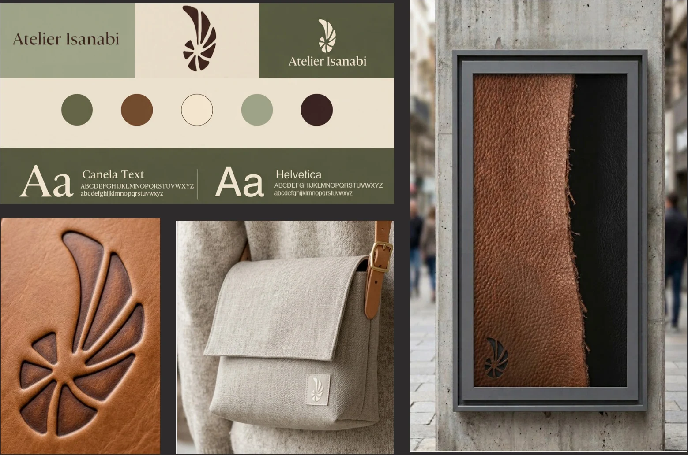
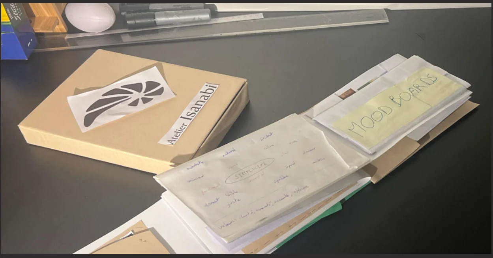
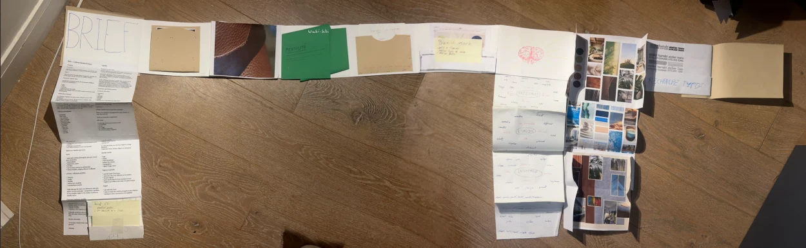
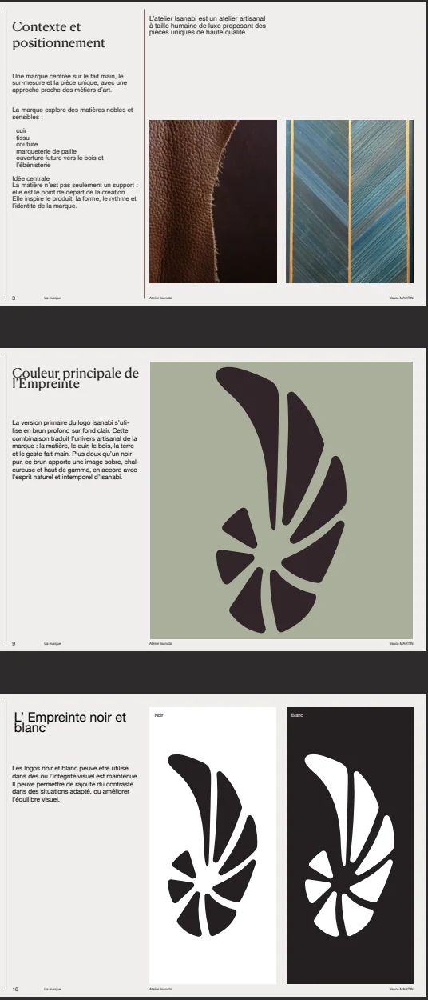

Isanabi
Création de l’identité visuelle d’Atelier Isanabi.

Pour produire ce branding, j’ai eu de nombreuses réunions pour comprendre les besoins du client. J’ai organisé mes idées dans un leporello pour créer l’identité de la marque et son storytelling.
J’ai créé une identité visuelle complète, que j’ai finalisée avec une charte graphique.


